theme_mn <- function() {
theme_minimal(base_size = 14) +
theme(
plot.title = element_text(face = "bold", size = 16),
plot.subtitle = element_text(color = "gray40"),
panel.grid.minor = element_blank(),
legend.position = "bottom"
)
}
mn_colors <- c(
"white" = "#3498DB", "black" = "#E74C3C", "hispanic" = "#F39C12",
"asian" = "#9B59B6", "native_american" = "#1ABC9C", "multiracial" = "#E67E22",
"pacific_islander" = "#95A5A6", "total" = "#2C3E50"
)
data("enr_multi_example", package = "mnschooldata")
enr <- enr_multi_example1. Minnesota’s 873,000 students are 41% students of color
Minnesota enrolled 873,175 students in 2022-23 across 389 districts. While still majority-white at 59%, the state’s schools are far more diverse than many assume – 41% of students identify as Black, Hispanic, Asian, Native American, multiracial, or Pacific Islander.
state_demo <- enr %>%
filter(is_state, grade_level == "TOTAL") %>%
select(subgroup, n_students, pct) %>%
arrange(desc(n_students))
stopifnot(nrow(state_demo) > 0)
state_demo
#> subgroup n_students pct
#> 1 total_enrollment 873175 1.000000000
#> 2 white 518783 0.594134051
#> 3 black 110312 0.126334355
#> 4 hispanic 105538 0.120866951
#> 5 asian 62538 0.071621382
#> 6 multiracial 59516 0.068160449
#> 7 native_american 15372 0.017604718
#> 8 pacific_islander 1116 0.001278094
state_plot <- state_demo %>%
filter(subgroup != "total_enrollment") %>%
mutate(
label = paste0(subgroup, " (", comma(n_students), ")"),
subgroup_label = reorder(label, n_students)
)
stopifnot(nrow(state_plot) > 0)
ggplot(state_plot, aes(x = subgroup_label, y = n_students, fill = subgroup)) +
geom_col() +
coord_flip() +
scale_fill_manual(values = mn_colors, guide = "none") +
scale_y_continuous(labels = comma) +
labs(
title = "Minnesota Enrollment by Race/Ethnicity (2022-23)",
subtitle = "873,175 students across 389 districts",
x = "", y = "Students"
) +
theme_mn()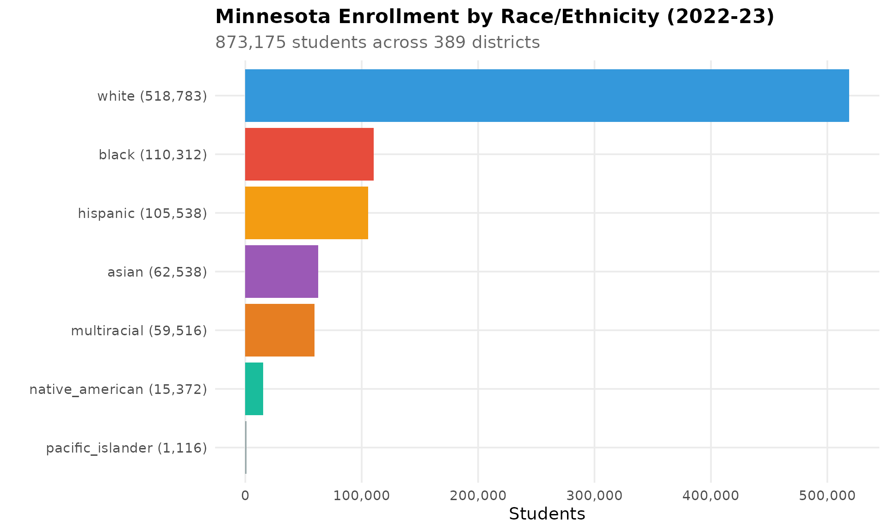
2. St. Paul schools are 28% Asian – the Hmong capital of America
St. Paul has the largest Hmong community in the United States. In the St. Paul Public School District, 9,022 students (27.5%) are Asian – more than any other racial group except Black (24.1%) and White (22.4%). Two charter schools, Hmong College Prep Academy (96% Asian, 2,456 students) and Prairie Seeds Academy (88% Asian, 942 students), serve primarily Hmong families.
stpaul <- enr %>%
filter(is_district,
district_name == "ST. PAUL PUBLIC SCHOOL DISTRICT",
grade_level == "TOTAL") %>%
select(subgroup, n_students, pct) %>%
arrange(desc(n_students))
stopifnot(nrow(stpaul) > 0)
stpaul
#> subgroup n_students pct
#> 1 total_enrollment 32750 1.0000000000
#> 2 asian 9022 0.2754809160
#> 3 black 7886 0.2407938931
#> 4 white 7348 0.2243664122
#> 5 hispanic 5077 0.1550229008
#> 6 multiracial 3155 0.0963358779
#> 7 native_american 254 0.0077557252
#> 8 pacific_islander 8 0.0002442748
stpaul_plot <- stpaul %>%
filter(subgroup != "total_enrollment") %>%
mutate(
pct_label = paste0(round(pct * 100, 1), "%"),
subgroup_label = reorder(subgroup, n_students)
)
stopifnot(nrow(stpaul_plot) > 0)
ggplot(stpaul_plot, aes(x = subgroup_label, y = n_students, fill = subgroup)) +
geom_col() +
geom_text(aes(label = pct_label), hjust = -0.1, size = 4) +
coord_flip() +
scale_fill_manual(values = mn_colors, guide = "none") +
scale_y_continuous(labels = comma, expand = expansion(mult = c(0, 0.15))) +
labs(
title = "St. Paul Public Schools Demographics (2022-23)",
subtitle = "Largest Hmong student population in the United States",
x = "", y = "Students"
) +
theme_mn()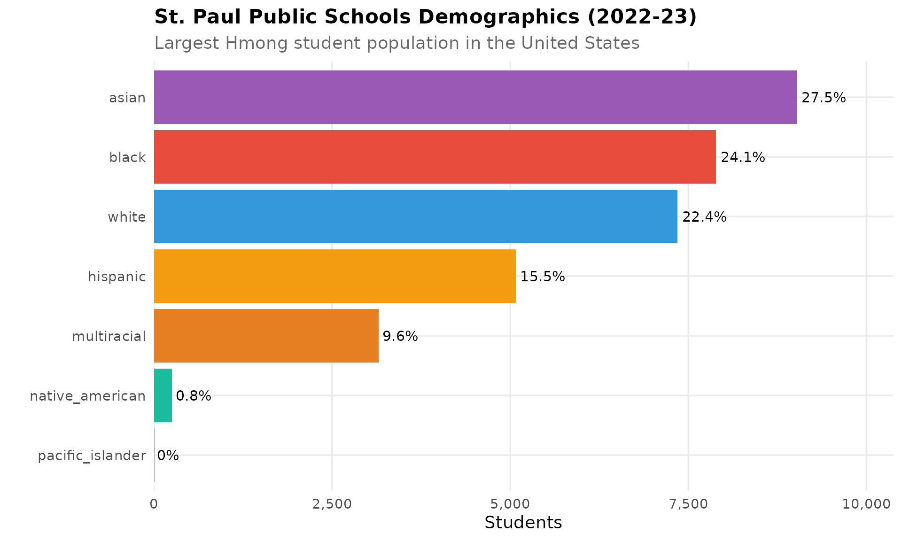
3. St. Cloud is 43% Black – Somali refugees reshaped a rural city
St. Cloud, a city of 70,000 in central Minnesota, saw dramatic demographic change as Somali refugees settled there starting in the late 1990s. Today 4,399 Black students make up 43% of the district’s enrollment of 10,232, making it one of the most demographically transformed districts in the country.
stcloud <- enr %>%
filter(is_district,
grepl("ST. CLOUD PUBLIC", district_name),
grade_level == "TOTAL") %>%
select(subgroup, n_students, pct) %>%
arrange(desc(n_students))
stopifnot(nrow(stcloud) > 0)
stcloud
#> subgroup n_students pct
#> 1 total_enrollment 10232 1.000000000
#> 2 black 4399 0.429925723
#> 3 white 3462 0.338350274
#> 4 hispanic 1248 0.121970289
#> 5 multiracial 800 0.078186083
#> 6 asian 245 0.023944488
#> 7 native_american 47 0.004593432
#> 8 pacific_islander 31 0.003029711
stcloud_plot <- stcloud %>%
filter(subgroup != "total_enrollment") %>%
mutate(
pct_label = paste0(round(pct * 100, 1), "%"),
subgroup_label = reorder(subgroup, n_students)
)
stopifnot(nrow(stcloud_plot) > 0)
ggplot(stcloud_plot, aes(x = subgroup_label, y = n_students, fill = subgroup)) +
geom_col() +
geom_text(aes(label = pct_label), hjust = -0.1, size = 4) +
coord_flip() +
scale_fill_manual(values = mn_colors, guide = "none") +
scale_y_continuous(labels = comma, expand = expansion(mult = c(0, 0.15))) +
labs(
title = "St. Cloud Public Schools Demographics (2022-23)",
subtitle = "Somali refugees transformed a central Minnesota city",
x = "", y = "Students"
) +
theme_mn()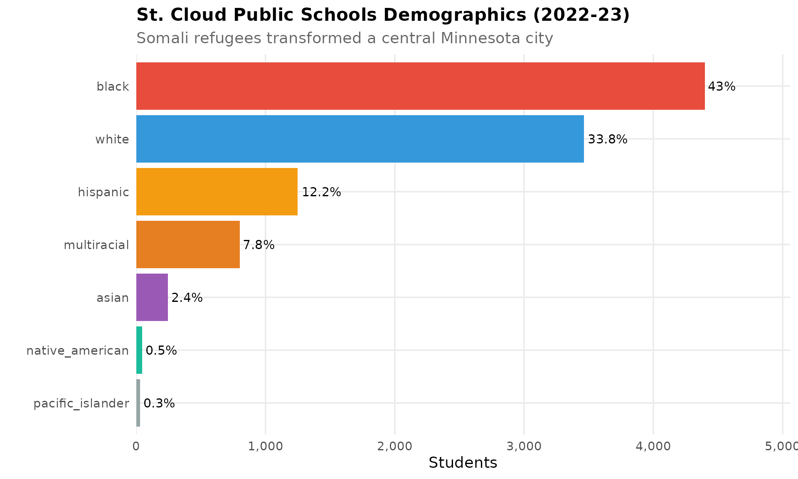
4. Anoka-Hennepin is Minnesota’s largest district at 38,336 students
Anoka-Hennepin School District, north of Minneapolis, serves more students than any other Minnesota district. At 38,336 students, it is larger than Minneapolis (30,079) and St. Paul (32,750). The suburban district is 53.5% white, with growing Black (17.6%), Asian (11.6%), and multiracial (8.9%) populations.
anoka <- enr %>%
filter(is_district,
grepl("ANOKA-HENNEPIN", district_name),
grade_level == "TOTAL") %>%
select(subgroup, n_students, pct) %>%
arrange(desc(n_students))
stopifnot(nrow(anoka) > 0)
anoka
#> subgroup n_students pct
#> 1 total_enrollment 38336 1.0000000000
#> 2 white 20520 0.5352671119
#> 3 black 6737 0.1757356010
#> 4 asian 4437 0.1157397746
#> 5 multiracial 3405 0.0888199082
#> 6 hispanic 3005 0.0783858514
#> 7 native_american 207 0.0053996244
#> 8 pacific_islander 25 0.0006521285
anoka_plot <- anoka %>%
filter(subgroup != "total_enrollment") %>%
mutate(
pct_label = paste0(round(pct * 100, 1), "%"),
subgroup_label = reorder(subgroup, n_students)
)
stopifnot(nrow(anoka_plot) > 0)
ggplot(anoka_plot, aes(x = subgroup_label, y = n_students, fill = subgroup)) +
geom_col() +
geom_text(aes(label = pct_label), hjust = -0.1, size = 4) +
coord_flip() +
scale_fill_manual(values = mn_colors, guide = "none") +
scale_y_continuous(labels = comma, expand = expansion(mult = c(0, 0.15))) +
labs(
title = "Anoka-Hennepin: Minnesota's Largest District (2022-23)",
subtitle = "38,336 students -- larger than Minneapolis or St. Paul",
x = "", y = "Students"
) +
theme_mn()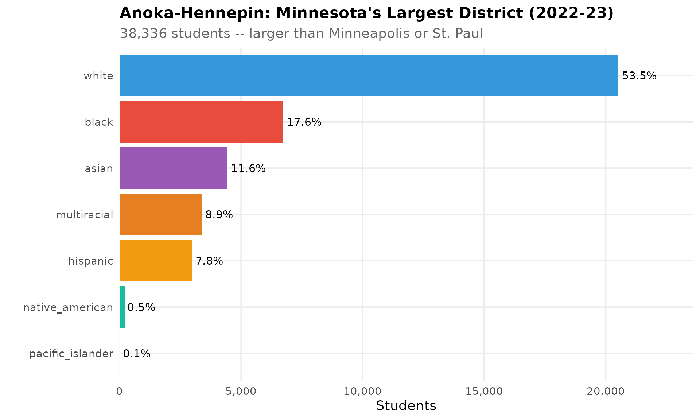
5. Worthington is 57% Hispanic – meatpacking built a new Minnesota
Worthington, a city of 14,000 in southwest Minnesota, is home to a JBS pork processing plant that attracted immigrants from Latin America and East Africa. Today 57% of the district’s 3,958 students are Hispanic, making it one of the most Latino school districts in the Upper Midwest.
worthington <- enr %>%
filter(is_district,
grepl("WORTHINGTON", district_name),
grade_level == "TOTAL") %>%
select(subgroup, n_students, pct) %>%
arrange(desc(n_students))
stopifnot(nrow(worthington) > 0)
worthington
#> subgroup n_students pct
#> 1 total_enrollment 3958 1.0000000000
#> 2 hispanic 2263 0.5717534108
#> 3 white 1083 0.2736230419
#> 4 asian 281 0.0709954522
#> 5 black 196 0.0495199596
#> 6 multiracial 106 0.0267812026
#> 7 pacific_islander 26 0.0065689742
#> 8 native_american 3 0.0007579586
worth_plot <- worthington %>%
filter(subgroup != "total_enrollment") %>%
mutate(
pct_label = paste0(round(pct * 100, 1), "%"),
subgroup_label = reorder(subgroup, n_students)
)
stopifnot(nrow(worth_plot) > 0)
ggplot(worth_plot, aes(x = subgroup_label, y = n_students, fill = subgroup)) +
geom_col() +
geom_text(aes(label = pct_label), hjust = -0.1, size = 4) +
coord_flip() +
scale_fill_manual(values = mn_colors, guide = "none") +
scale_y_continuous(labels = comma, expand = expansion(mult = c(0, 0.15))) +
labs(
title = "Worthington Public Schools Demographics (2022-23)",
subtitle = "Meatpacking jobs drew immigrant families to southwest Minnesota",
x = "", y = "Students"
) +
theme_mn()
6. Minneapolis is minority-majority: 64% students of color
Minneapolis Public Schools enrolled 30,079 students in 2022-23, with white students making up just 36%. Black students are the largest group at 27%, followed by Hispanic (22%), multiracial (8%), and Asian (3%). The city’s schools reflect decades of immigration from Somalia, Latin America, and Southeast Asia.
mpls <- enr %>%
filter(is_district,
district_name == "MINNEAPOLIS PUBLIC SCHOOL DISTRICT",
grade_level == "TOTAL") %>%
select(subgroup, n_students, pct) %>%
arrange(desc(n_students))
stopifnot(nrow(mpls) > 0)
mpls
#> subgroup n_students pct
#> 1 total_enrollment 30079 1.0000000000
#> 2 white 10935 0.3635426710
#> 3 black 8056 0.2678280528
#> 4 hispanic 6723 0.2235114199
#> 5 multiracial 2326 0.0773296985
#> 6 native_american 1080 0.0359054490
#> 7 asian 940 0.0312510389
#> 8 pacific_islander 19 0.0006316699
mpls_plot <- mpls %>%
filter(subgroup != "total_enrollment") %>%
mutate(
pct_label = paste0(round(pct * 100, 1), "%"),
subgroup_label = reorder(subgroup, n_students)
)
stopifnot(nrow(mpls_plot) > 0)
ggplot(mpls_plot, aes(x = subgroup_label, y = n_students, fill = subgroup)) +
geom_col() +
geom_text(aes(label = pct_label), hjust = -0.1, size = 4) +
coord_flip() +
scale_fill_manual(values = mn_colors, guide = "none") +
scale_y_continuous(labels = comma, expand = expansion(mult = c(0, 0.15))) +
labs(
title = "Minneapolis Public Schools Demographics (2022-23)",
subtitle = "64% students of color in Minnesota's second-largest city",
x = "", y = "Students"
) +
theme_mn()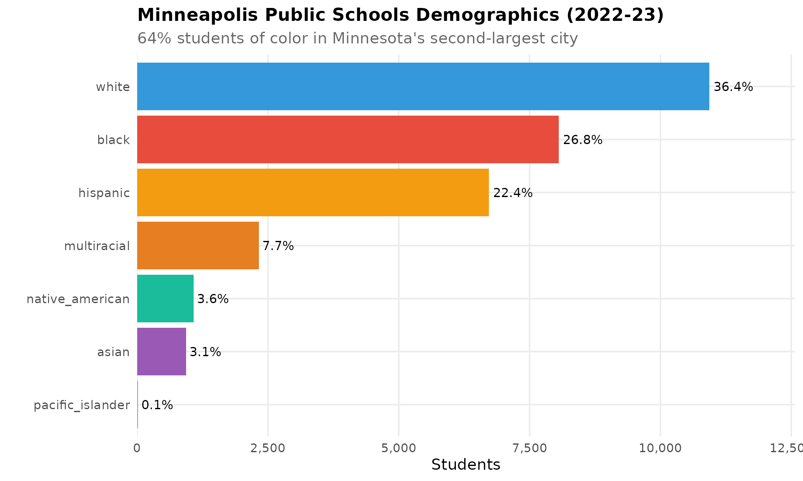
7. Red Lake is 96% Native American
Red Lake Public School District, on the Red Lake Band of Chippewa reservation in northern Minnesota, enrolls 1,517 students – 1,455 of whom (96%) are Native American. Nearby Cass Lake-Bena (94% Native American) and Waubun-Ogema-White Earth (81%) serve similarly concentrated Indigenous communities. Together, 15,372 Native American students attend Minnesota schools statewide.
native <- enr %>%
filter(is_district, subgroup == "native_american",
grade_level == "TOTAL") %>%
left_join(
enr %>% filter(is_district, subgroup == "total_enrollment",
grade_level == "TOTAL") %>%
select(district_name, total = n_students),
by = "district_name"
) %>%
filter(total > 100) %>%
arrange(desc(pct)) %>%
head(10) %>%
select(district_name, n_students, pct, total)
stopifnot(nrow(native) > 0)
native
#> district_name n_students pct total
#> 1 RED LAKE PUBLIC SCHOOL DISTRICT 1455 0.9591299 1517
#> 2 CASS LAKE-BENA PUBLIC SCHOOLS 1034 0.9391462 1101
#> 3 WAUBUN-OGEMA-WHITE EARTH SCHOOLS 575 0.8053221 714
#> 4 MAHNOMEN PUBLIC SCHOOL DISTRICT 468 0.7177914 652
#> 5 VOYAGEURS EXPEDITIONARY 67 0.5826087 115
#> 6 BROWNS VALLEY PUBLIC SCHOOL DIST 116 0.5658537 205
#> 7 TREKNORTH HIGH SCHOOL 121 0.4820717 251
#> 8 KELLIHER PUBLIC SCHOOL DISTRICT 145 0.4677419 310
#> 9 ONAMIA PUBLIC SCHOOL DISTRICT 227 0.4477318 507
#> 10 NORTHLAND COMMUNITY SCHOOLS 118 0.3746032 315
native_plot <- native %>%
mutate(
pct_label = paste0(round(pct * 100, 1), "%"),
district_label = reorder(district_name, pct)
)
stopifnot(nrow(native_plot) > 0)
ggplot(native_plot, aes(x = district_label, y = pct * 100)) +
geom_col(fill = mn_colors["native_american"]) +
geom_text(aes(label = pct_label), hjust = -0.1, size = 3.5) +
coord_flip() +
scale_y_continuous(expand = expansion(mult = c(0, 0.15))) +
labs(
title = "Highest Native American Student Populations (2022-23)",
subtitle = "Red Lake, Cass Lake-Bena, and White Earth reservation districts lead",
x = "", y = "Percent Native American"
) +
theme_mn()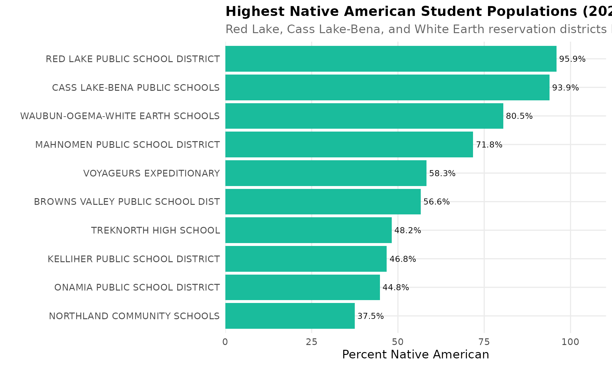
8. 68 charter schools serve 37,782 students
Minnesota passed the nation’s first charter school law in 1991. Today 68 charter school districts serve 37,782 students (4.3% of the state total). The largest is Minnesota Transitions Charter School (6,425 students), followed by Hmong College Prep Academy (2,456). Many charters serve specific immigrant communities.
charter <- enr %>%
filter(is_charter, subgroup == "total_enrollment",
grade_level == "TOTAL") %>%
arrange(desc(n_students)) %>%
select(district_name, n_students) %>%
head(15)
stopifnot(nrow(charter) > 0)
charter
#> district_name n_students
#> 1 MINNESOTA TRANSITIONS CHARTER SCH 6425
#> 2 HMONG COLLEGE PREP ACADEMY 2456
#> 3 HIAWATHA ACADEMIES 1683
#> 4 METRO SCHOOLS CHARTER 1643
#> 5 EAGLE RIDGE ACADEMY CHARTER SCHOOL 1538
#> 6 PACT CHARTER SCHOOL 1457
#> 7 PARNASSUS PREPARATORY CHARTER SCH 1362
#> 8 LAKES INTERNATIONAL LANGUAGE ACADEM 1315
#> 9 ST. CROIX PREPARATORY ACADEMY 1229
#> 10 HIGHER GROUND ACADEMY 1177
#> 11 NOVA CLASSICAL ACADEMY 1032
#> 12 SPECTRUM HIGH SCHOOL 982
#> 13 PRAIRIE SEEDS ACADEMY 942
#> 14 GREAT RIVER SCHOOL 811
#> 15 COMMUNITY OF PEACE ACADEMY 803
charter_plot <- charter %>%
mutate(district_label = reorder(district_name, n_students))
stopifnot(nrow(charter_plot) > 0)
ggplot(charter_plot, aes(x = district_label, y = n_students)) +
geom_col(fill = mn_colors["total"]) +
coord_flip() +
scale_y_continuous(labels = comma) +
labs(
title = "Largest Charter Schools in Minnesota (2022-23)",
subtitle = "68 charter districts serve 37,782 students statewide",
x = "", y = "Students"
) +
theme_mn()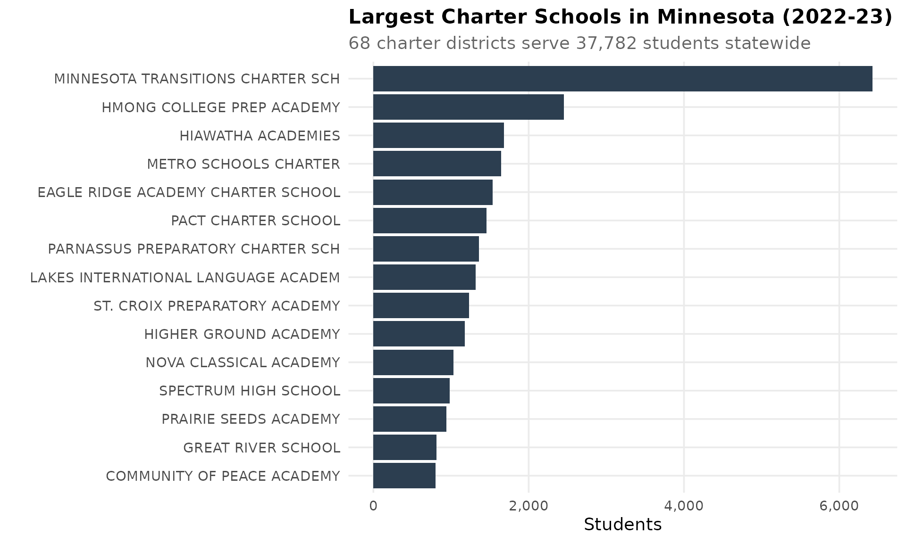
9. The suburban ring enrolls 211,000+ students
Thirteen suburban ring districts surrounding Minneapolis-St. Paul collectively enroll more than 211,000 students – nearly a quarter of the state total. Anoka-Hennepin (38,336), Rosemount-Apple Valley-Eagan (29,229), and Osseo (21,385) are the biggest, as families continue moving from the urban core to the suburbs.
suburban_names <- c(
"ANOKA-HENNEPIN SCHOOL DISTRICT",
"ROSEMOUNT-APPLE VALLEY-EAGAN",
"OSSEO PUBLIC SCHOOL DISTRICT",
"SOUTH WASHINGTON COUNTY SCHOOLS",
"ELK RIVER SCHOOL DISTRICT",
"WAYZATA PUBLIC SCHOOL DISTRICT",
"LAKEVILLE PUBLIC SCHOOL DISTRICT",
"MOUNDS VIEW PUBLIC SCHOOL DISTRICT",
"NORTH ST. PAUL-MAPLEWOOD OAKDALE",
"ROBBINSDALE PUBLIC SCHOOL DISTRICT",
"BLOOMINGTON PUBLIC SCHOOL DISTRICT",
"EDEN PRAIRIE PUBLIC SCHOOL DISTRICT",
"EASTERN CARVER COUNTY PUBLIC SCHOOL"
)
suburban <- enr %>%
filter(is_district, district_name %in% suburban_names,
subgroup == "total_enrollment", grade_level == "TOTAL") %>%
arrange(desc(n_students)) %>%
select(district_name, n_students)
stopifnot(nrow(suburban) > 0)
suburban
#> district_name n_students
#> 1 ANOKA-HENNEPIN SCHOOL DISTRICT 38336
#> 2 ROSEMOUNT-APPLE VALLEY-EAGAN 29229
#> 3 OSSEO PUBLIC SCHOOL DISTRICT 21385
#> 4 SOUTH WASHINGTON COUNTY SCHOOLS 19705
#> 5 ELK RIVER SCHOOL DISTRICT 14785
#> 6 WAYZATA PUBLIC SCHOOL DISTRICT 13217
#> 7 LAKEVILLE PUBLIC SCHOOL DISTRICT 12105
#> 8 MOUNDS VIEW PUBLIC SCHOOL DISTRICT 11935
#> 9 NORTH ST. PAUL-MAPLEWOOD OAKDALE 10666
#> 10 ROBBINSDALE PUBLIC SCHOOL DISTRICT 10326
#> 11 BLOOMINGTON PUBLIC SCHOOL DISTRICT 10317
#> 12 EDEN PRAIRIE PUBLIC SCHOOL DISTRICT 9681
#> 13 EASTERN CARVER COUNTY PUBLIC SCHOOL 9195
suburban_plot <- suburban %>%
mutate(district_label = reorder(district_name, n_students))
stopifnot(nrow(suburban_plot) > 0)
ggplot(suburban_plot, aes(x = district_label, y = n_students)) +
geom_col(fill = mn_colors["total"]) +
coord_flip() +
scale_y_continuous(labels = comma) +
labs(
title = "Suburban Ring Districts (2022-23)",
subtitle = paste0("13 districts collectively enroll ", comma(sum(suburban$n_students)), " students"),
x = "", y = "Students"
) +
theme_mn()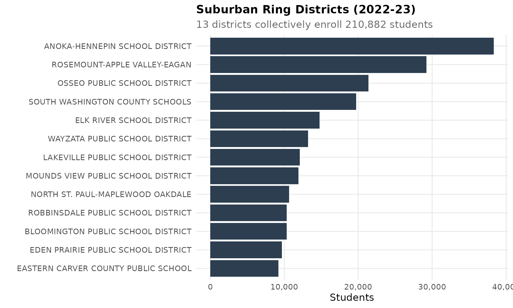
10. Rochester’s 17,320 students reflect Mayo Clinic’s global draw
Rochester Public Schools, anchored by the Mayo Clinic, enrolled 17,320 students in 2022-23. The district is remarkably diverse for an outstate city: 51% white, 17% Black, 13% Hispanic, 9% Asian, and 9% multiracial. Mayo Clinic’s global workforce brings families from around the world to southeast Minnesota.
rochester <- enr %>%
filter(is_district,
district_name == "ROCHESTER PUBLIC SCHOOL DISTRICT",
grade_level == "TOTAL") %>%
select(subgroup, n_students, pct) %>%
arrange(desc(n_students))
stopifnot(nrow(rochester) > 0)
rochester
#> subgroup n_students pct
#> 1 total_enrollment 17320 1.0000000000
#> 2 white 8821 0.5092956120
#> 3 black 2981 0.1721131640
#> 4 hispanic 2299 0.1327367206
#> 5 multiracial 1644 0.0949191686
#> 6 asian 1486 0.0857967667
#> 7 native_american 73 0.0042147806
#> 8 pacific_islander 16 0.0009237875
roch_plot <- rochester %>%
filter(subgroup != "total_enrollment") %>%
mutate(
pct_label = paste0(round(pct * 100, 1), "%"),
subgroup_label = reorder(subgroup, n_students)
)
stopifnot(nrow(roch_plot) > 0)
ggplot(roch_plot, aes(x = subgroup_label, y = n_students, fill = subgroup)) +
geom_col() +
geom_text(aes(label = pct_label), hjust = -0.1, size = 4) +
coord_flip() +
scale_fill_manual(values = mn_colors, guide = "none") +
scale_y_continuous(labels = comma, expand = expansion(mult = c(0, 0.15))) +
labs(
title = "Rochester Public Schools Demographics (2022-23)",
subtitle = "Mayo Clinic brings global diversity to southeast Minnesota",
x = "", y = "Students"
) +
theme_mn()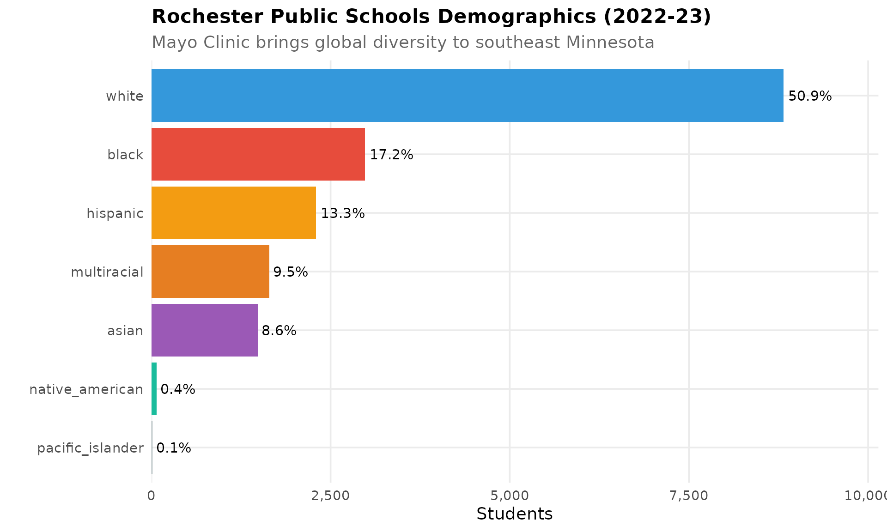
11. Duluth: 75% white, but diversifying in the Northland
Duluth Public Schools enrolled 8,807 students in 2022-23 in Minnesota’s third-largest city. At 75% white, it is the least diverse of the state’s large districts, but multiracial students (10.6%) are now the second-largest group, reflecting changing demographics in northern Minnesota.
duluth <- enr %>%
filter(is_district,
grepl("DULUTH PUBLIC", district_name),
grade_level == "TOTAL") %>%
select(subgroup, n_students, pct) %>%
arrange(desc(n_students))
stopifnot(nrow(duluth) > 0)
duluth
#> subgroup n_students pct
#> 1 total_enrollment 8807 1.0000000000
#> 2 white 6646 0.7546270012
#> 3 multiracial 933 0.1059384580
#> 4 black 419 0.0475757920
#> 5 hispanic 386 0.0438287726
#> 6 native_american 338 0.0383785625
#> 7 asian 77 0.0087430453
#> 8 pacific_islander 8 0.0009083683
duluth_plot <- duluth %>%
filter(subgroup != "total_enrollment") %>%
mutate(
pct_label = paste0(round(pct * 100, 1), "%"),
subgroup_label = reorder(subgroup, n_students)
)
stopifnot(nrow(duluth_plot) > 0)
ggplot(duluth_plot, aes(x = subgroup_label, y = n_students, fill = subgroup)) +
geom_col() +
geom_text(aes(label = pct_label), hjust = -0.1, size = 4) +
coord_flip() +
scale_fill_manual(values = mn_colors, guide = "none") +
scale_y_continuous(labels = comma, expand = expansion(mult = c(0, 0.15))) +
labs(
title = "Duluth Public Schools Demographics (2022-23)",
subtitle = "Northern Minnesota's largest city, 75% white but diversifying",
x = "", y = "Students"
) +
theme_mn()
12. Columbia Heights: The most diverse district in Minnesota
Columbia Heights Public Schools, a small inner-ring suburb of Minneapolis, enrolled 3,449 students with the most evenly distributed demographics of any district in the state: 51% Hispanic, 13% white, 13% multiracial, 12% Black, and 10% Asian. No single group dominates.
colhts <- enr %>%
filter(is_district,
grepl("COLUMBIA HEIGHTS", district_name),
grade_level == "TOTAL") %>%
select(subgroup, n_students, pct) %>%
arrange(desc(n_students))
stopifnot(nrow(colhts) > 0)
colhts
#> subgroup n_students pct
#> 1 total_enrollment 3449 1.0000000000
#> 2 hispanic 1774 0.5143519861
#> 3 black 901 0.2612351406
#> 4 white 448 0.1298927225
#> 5 multiracial 205 0.0594375181
#> 6 asian 107 0.0310234851
#> 7 native_american 13 0.0037692085
#> 8 pacific_islander 1 0.0002899391
colhts_plot <- colhts %>%
filter(subgroup != "total_enrollment") %>%
mutate(
pct_label = paste0(round(pct * 100, 1), "%"),
subgroup_label = reorder(subgroup, n_students)
)
stopifnot(nrow(colhts_plot) > 0)
ggplot(colhts_plot, aes(x = subgroup_label, y = n_students, fill = subgroup)) +
geom_col() +
geom_text(aes(label = pct_label), hjust = -0.1, size = 4) +
coord_flip() +
scale_fill_manual(values = mn_colors, guide = "none") +
scale_y_continuous(labels = comma, expand = expansion(mult = c(0, 0.15))) +
labs(
title = "Columbia Heights: Minnesota's Most Diverse District (2022-23)",
subtitle = "3,449 students with no single racial majority",
x = "", y = "Students"
) +
theme_mn()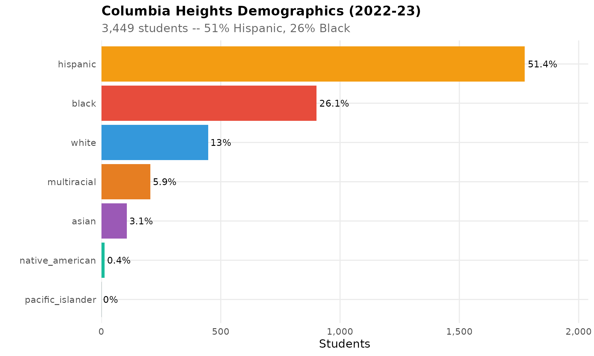
13. 55 districts have fewer than 250 students
Rural Minnesota continues to consolidate. Fifty-five districts enroll fewer than 250 students, while 16 districts have over 10,000. The 16 largest districts serve 294,000 students (34% of the state), while the 55 smallest collectively serve just 8,052.
size_dist <- enr %>%
filter(is_district, subgroup == "total_enrollment",
grade_level == "TOTAL") %>%
mutate(size_cat = case_when(
n_students < 250 ~ "Under 250",
n_students < 500 ~ "250-499",
n_students < 1000 ~ "500-999",
n_students < 5000 ~ "1,000-4,999",
n_students < 10000 ~ "5,000-9,999",
TRUE ~ "10,000+"
)) %>%
group_by(size_cat) %>%
summarize(
n_districts = n(),
total_students = sum(n_students),
.groups = "drop"
)
stopifnot(nrow(size_dist) > 0)
size_dist
#> # A tibble: 6 × 3
#> size_cat n_districts total_students
#> <chr> <int> <int>
#> 1 1,000-4,999 119 253651
#> 2 10,000+ 16 293943
#> 3 250-499 66 24322
#> 4 5,000-9,999 24 172196
#> 5 500-999 109 78015
#> 6 Under 250 55 8052
size_plot <- size_dist %>%
mutate(size_cat = factor(size_cat,
levels = c("Under 250", "250-499", "500-999",
"1,000-4,999", "5,000-9,999", "10,000+")))
stopifnot(nrow(size_plot) > 0)
ggplot(size_plot, aes(x = size_cat, y = n_districts)) +
geom_col(fill = mn_colors["total"]) +
geom_text(aes(label = n_districts), vjust = -0.5, size = 4) +
labs(
title = "Minnesota District Size Distribution (2022-23)",
subtitle = "55 districts have fewer than 250 students",
x = "District Size (students)", y = "Number of Districts"
) +
theme_mn()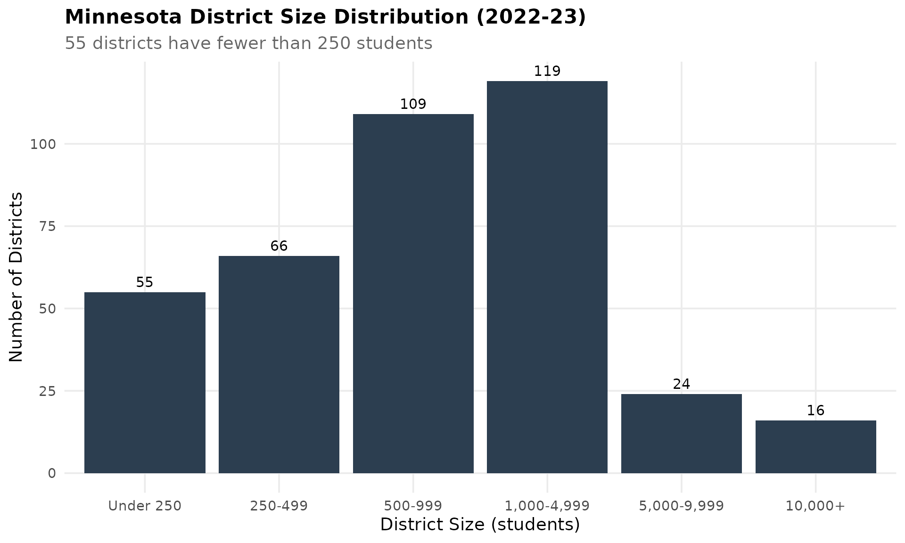
14. The top 10 most diverse large districts
Among districts with over 3,000 students, the least-white are Columbia Heights (13% white), Richfield (22%), Burnsville (35%), St. Paul (22%), and Brooklyn Center (20%). Several of these inner-ring suburbs diversified rapidly as immigrant and refugee families moved out of Minneapolis and St. Paul.
diverse_large <- enr %>%
filter(is_district, subgroup == "white", grade_level == "TOTAL") %>%
left_join(
enr %>% filter(is_district, subgroup == "total_enrollment",
grade_level == "TOTAL") %>%
select(district_name, total = n_students),
by = "district_name"
) %>%
filter(total > 3000, !is_charter) %>%
arrange(pct) %>%
head(10) %>%
select(district_name, n_students, pct, total)
stopifnot(nrow(diverse_large) > 0)
diverse_large
#> district_name n_students pct total
#> 1 COLUMBIA HEIGHTS PUBLIC SCHOOL DIST 448 0.1298927 3449
#> 2 NORTH ST. PAUL-MAPLEWOOD OAKDALE 2387 0.2237952 10666
#> 3 ST. PAUL PUBLIC SCHOOL DISTRICT 7348 0.2243664 32750
#> 4 BURNSVILLE PUBLIC SCHOOL DISTRICT 1970 0.2614119 7536
#> 5 WORTHINGTON PUBLIC SCHOOL DISTRICT 1083 0.2736230 3958
#> 6 RICHFIELD PUBLIC SCHOOL DISTRICT 1147 0.2879016 3984
#> 7 WILLMAR PUBLIC SCHOOL DISTRICT 1297 0.3170374 4091
#> 8 ROBBINSDALE PUBLIC SCHOOL DISTRICT 3351 0.3245206 10326
#> 9 ST. CLOUD PUBLIC SCHOOL DISTRICT 3462 0.3383503 10232
#> 10 FARIBAULT PUBLIC SCHOOL DISTRICT 1075 0.3455481 3111
diverse_plot <- diverse_large %>%
mutate(
pct_label = paste0(round(pct * 100, 1), "%"),
district_label = reorder(district_name, -pct)
)
stopifnot(nrow(diverse_plot) > 0)
ggplot(diverse_plot, aes(x = district_label, y = pct * 100)) +
geom_col(fill = mn_colors["white"]) +
geom_text(aes(label = pct_label), hjust = -0.1, size = 3.5) +
coord_flip() +
scale_y_continuous(expand = expansion(mult = c(0, 0.15))) +
labs(
title = "Most Diverse Large Districts in Minnesota (2022-23)",
subtitle = "Percent white among districts with 3,000+ students",
x = "", y = "Percent White"
) +
theme_mn()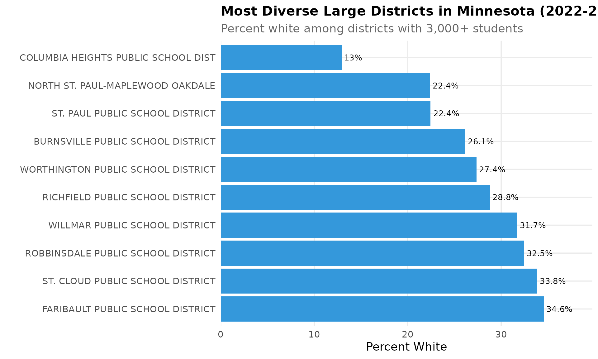
15. Outstate districts are still 85%+ white
While the Twin Cities metro diversified rapidly, outstate Minnesota districts remain overwhelmingly white. Among districts with 3,000+ students, New Prague (92%), Chisago Lakes (90%), Princeton (89%), and Alexandria (88%) have barely changed, creating a stark geographic divide in who Minnesota students learn alongside.
whitest <- enr %>%
filter(is_district, subgroup == "white", grade_level == "TOTAL") %>%
left_join(
enr %>% filter(is_district, subgroup == "total_enrollment",
grade_level == "TOTAL") %>%
select(district_name, total = n_students),
by = "district_name"
) %>%
filter(total > 3000, !is_charter) %>%
arrange(desc(pct)) %>%
head(10) %>%
select(district_name, n_students, pct, total)
stopifnot(nrow(whitest) > 0)
whitest
#> district_name n_students pct total
#> 1 NEW PRAGUE AREA SCHOOLS 3673 0.9166459 4007
#> 2 CHISAGO LAKES SCHOOL DISTRICT 2929 0.9026194 3245
#> 3 PRINCETON PUBLIC SCHOOL DISTRICT 3009 0.8860424 3396
#> 4 ALEXANDRIA PUBLIC SCHOOL DISTRICT 3474 0.8792711 3951
#> 5 WACONIA PUBLIC SCHOOL DISTRICT 3429 0.8754149 3917
#> 6 BRAINERD PUBLIC SCHOOL DISTRICT 5163 0.8728656 5915
#> 7 ORONO PUBLIC SCHOOL DISTRICT 2606 0.8672213 3005
#> 8 BUFFALO-HANOVER-MONTROSE PUBLIC SCH 4381 0.8558312 5119
#> 9 GRAND RAPIDS PUBLIC SCHOOL DISTRICT 3281 0.8478036 3870
#> 10 SARTELL-ST. STEPHEN SCHOOL DISTRICT 3248 0.8326070 3901
whitest_plot <- whitest %>%
mutate(
pct_label = paste0(round(pct * 100, 1), "%"),
district_label = reorder(district_name, pct)
)
stopifnot(nrow(whitest_plot) > 0)
ggplot(whitest_plot, aes(x = district_label, y = pct * 100)) +
geom_col(fill = mn_colors["white"]) +
geom_text(aes(label = pct_label), hjust = -0.1, size = 3.5) +
coord_flip() +
scale_y_continuous(expand = expansion(mult = c(0, 0.15)),
limits = c(0, 100)) +
labs(
title = "Whitest Large Districts in Minnesota (2022-23)",
subtitle = "Percent white among districts with 3,000+ students",
x = "", y = "Percent White"
) +
theme_mn()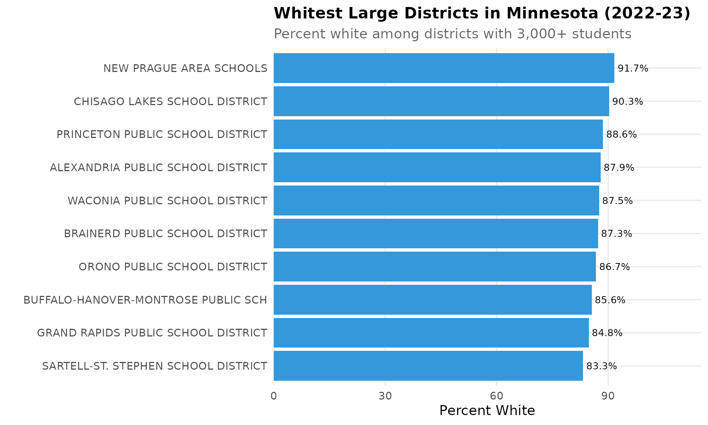
Session Info
sessionInfo()
#> R version 4.5.2 (2025-10-31)
#> Platform: x86_64-pc-linux-gnu
#> Running under: Ubuntu 24.04.3 LTS
#>
#> Matrix products: default
#> BLAS: /usr/lib/x86_64-linux-gnu/openblas-pthread/libblas.so.3
#> LAPACK: /usr/lib/x86_64-linux-gnu/openblas-pthread/libopenblasp-r0.3.26.so; LAPACK version 3.12.0
#>
#> locale:
#> [1] LC_CTYPE=C.UTF-8 LC_NUMERIC=C LC_TIME=C.UTF-8
#> [4] LC_COLLATE=C.UTF-8 LC_MONETARY=C.UTF-8 LC_MESSAGES=C.UTF-8
#> [7] LC_PAPER=C.UTF-8 LC_NAME=C LC_ADDRESS=C
#> [10] LC_TELEPHONE=C LC_MEASUREMENT=C.UTF-8 LC_IDENTIFICATION=C
#>
#> time zone: UTC
#> tzcode source: system (glibc)
#>
#> attached base packages:
#> [1] stats graphics grDevices utils datasets methods base
#>
#> other attached packages:
#> [1] scales_1.4.0 dplyr_1.2.0 ggplot2_4.0.2 mnschooldata_0.1.0
#>
#> loaded via a namespace (and not attached):
#> [1] gtable_0.3.6 jsonlite_2.0.0 compiler_4.5.2 tidyselect_1.2.1
#> [5] jquerylib_0.1.4 systemfonts_1.3.1 textshaping_1.0.4 yaml_2.3.12
#> [9] fastmap_1.2.0 R6_2.6.1 labeling_0.4.3 generics_0.1.4
#> [13] knitr_1.51 tibble_3.3.1 desc_1.4.3 bslib_0.10.0
#> [17] pillar_1.11.1 RColorBrewer_1.1-3 rlang_1.1.7 utf8_1.2.6
#> [21] cachem_1.1.0 xfun_0.56 fs_1.6.6 sass_0.4.10
#> [25] S7_0.2.1 cli_3.6.5 pkgdown_2.2.0 withr_3.0.2
#> [29] magrittr_2.0.4 digest_0.6.39 grid_4.5.2 lifecycle_1.0.5
#> [33] vctrs_0.7.1 evaluate_1.0.5 glue_1.8.0 farver_2.1.2
#> [37] codetools_0.2-20 ragg_1.5.0 rmarkdown_2.30 tools_4.5.2
#> [41] pkgconfig_2.0.3 htmltools_0.5.9